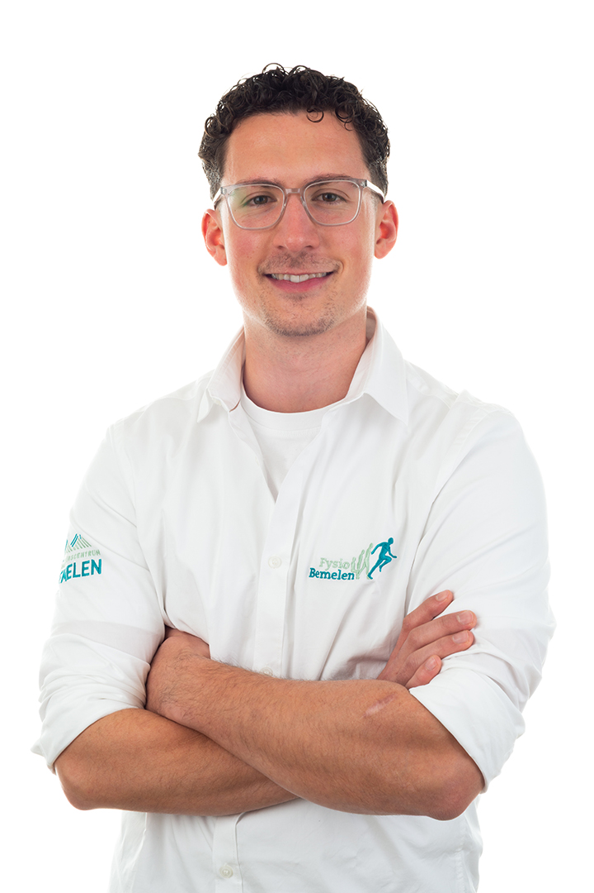

Levi Hanselaar
Osteopaat MSc. DO-MRO
Begeleidt cliënten van alle leeftijden met een persoonlijke, rustige aanpak — van rug- en gewrichtsklachten tot baby's en sport.
Van kinds af aan heb ik de droom om het menselijk lichaam zo goed mogelijk te leren kennen. Die nieuwsgierigheid is de rode draad in mijn opleidingen en in hoe ik werk: rustig, met aandacht, en altijd op zoek naar de oorzaak achter een klacht. Buiten de praktijk sta ik regelmatig op het sportveld, wat mijn band met sporters en hun klachten alleen maar versterkt.
Opleiding
- Fysiotherapie, Zuyd Hogeschool, Heerlen (2019-2023)
- Osteopathie, International Academy of Osteopathy, Antwerpen (2023-2027)
Speciale interesses
Orofaciale klachten, spijsverteringsklachten en sporters.